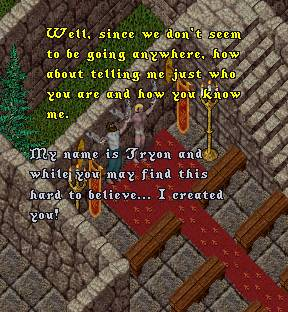
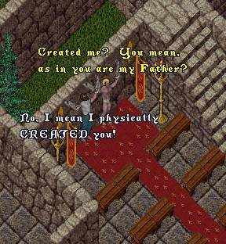
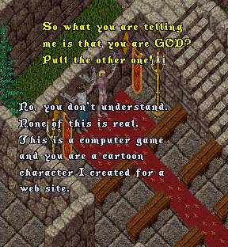
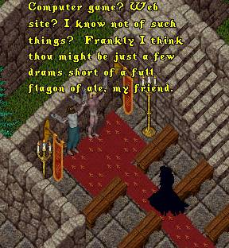
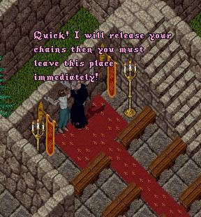
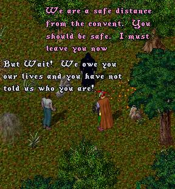
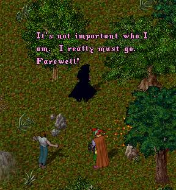
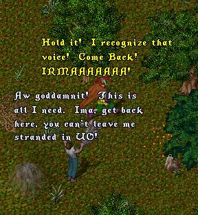

 |
 |
 |
 |
Tryon tries desperately to get ImaNewbie to
understand the concept of his being a comic
character and not a real being, when all of a
sudden a dark-robed figure appears out of
nowhere and begins to free them of their
shackles.
 |
 |
 |
The mysterious robed figure runs
off, but suddenly ImaNewbie
is struck with a revelation!
He recognizes the voice ...
It can only be one person! ...
 |